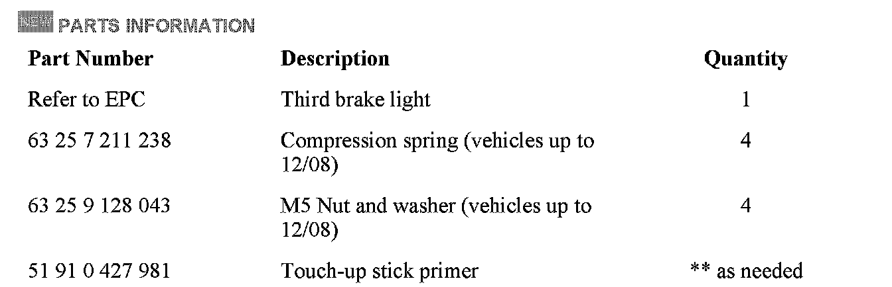
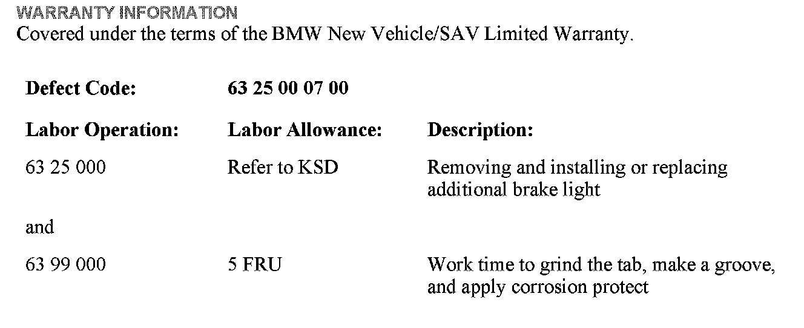
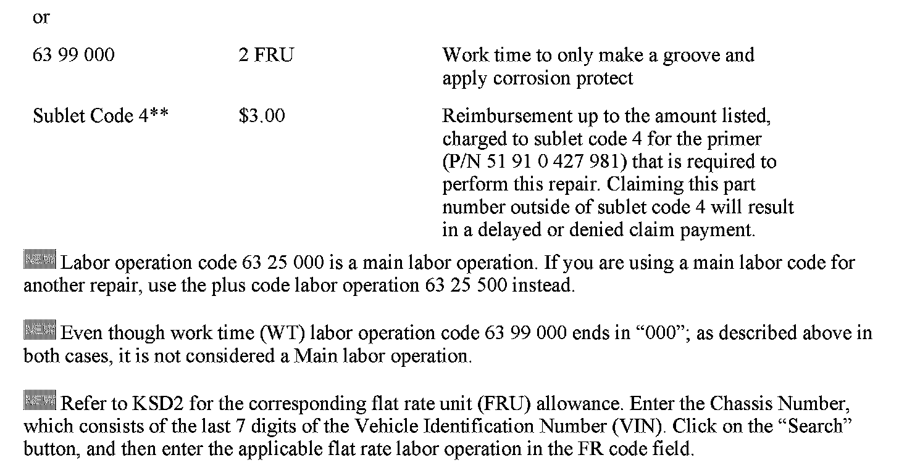
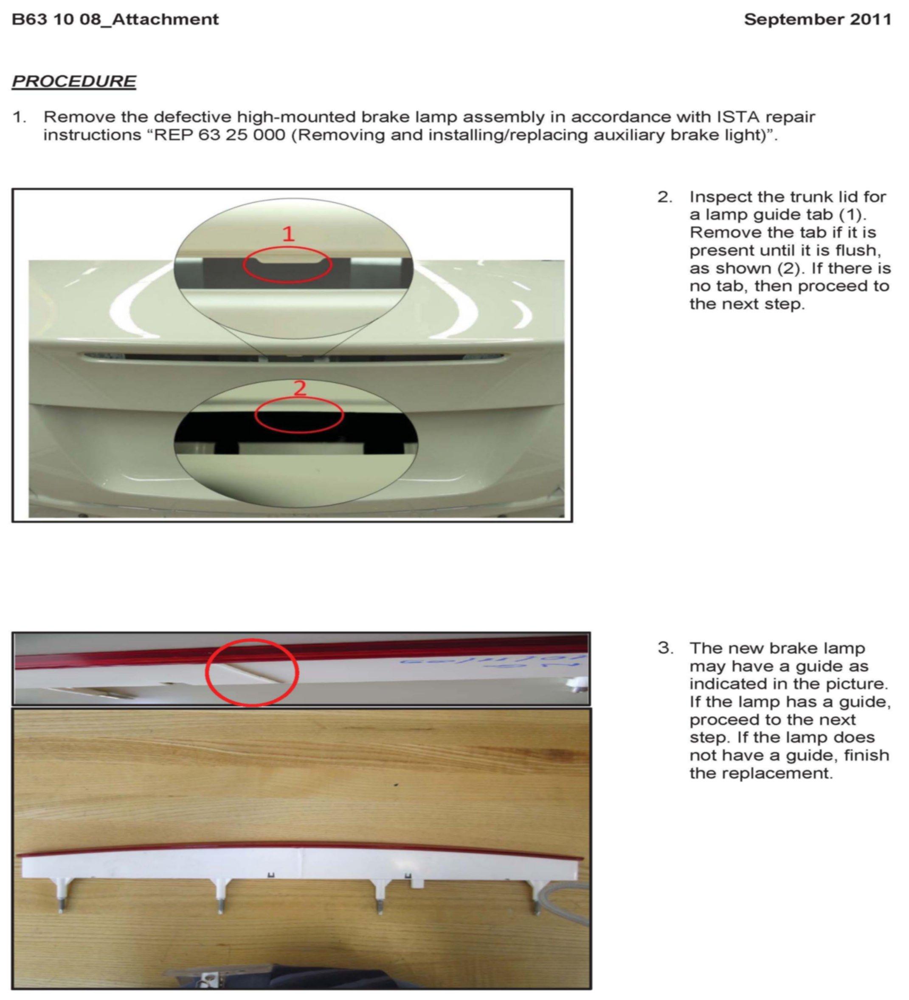
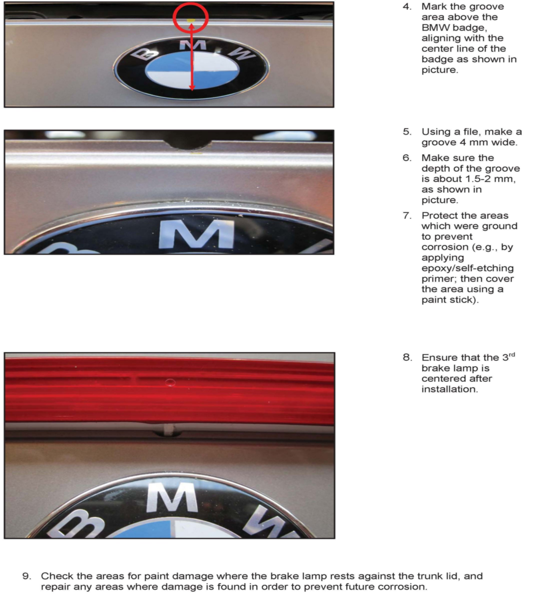

Lighting - Third Brake Light Is Cracked And Water Enters
SI B63 10 08Lights
December 2011
Technical Service
This Service Information bulletin supersedes SI B63 10 08 dated September 2011.
[NEW] designates changes to this revision
SUBJECT
Third Brake Light Cracked, Loose, or Letting in Water
MODEL
E82, E88 (1 Series)
SITUATION
The third brake light lens is cracked, causing it to become loose and letting in water.
CAUSE
Excess mounting tension caused by the four compression springs and/or the profile of the cut-out in the trunk lid.
PROCEDURE
The replacement of the 3rd brake lamp has been modified. The installation of the 3rd brake lamp requires a groove in the trunk lid. Refer to the attachment for the updated repair procedure.

[NEW] PARTS INFORMATION


WARRANTY INFORMATION
ATTACHMENTS


B63 10 08 - Procedure